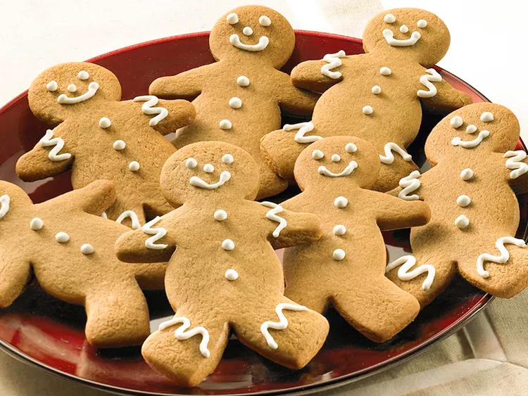

Voltar para o inicio
Cookien Natalinos

Essa receita de biscoito de gengibre faz os biscoitos de Natal mais
bonitos. Coloque glacê simples ou colorido em seus homenzinhos de gengibre
ou decore-os com passas, groselhas ou balas de canela para fazer os olhos
e os botões.
Nenhuma comemoração de feriado está completa sem os adoráveis biscoitos de
gengibre decorados. Esses biscoitos de gengibre gritam "época de Natal",
desde o sabor de especiarias até o formato festivo. Então, pegue as
crianças, prepare os cortadores de biscoito e prepare-se para saborear os
melhores biscoitos de gengibre de sua vida.
Ingredientes
- 3 xícaras de farinha de trigo, mais um pouco para enrolar
- 2 colheres de chá de gengibre moído McCormick
- 1 colher de chá de canela moída McCormick®.
- 1 colher de chá de bicarbonato de sódio
- ¼ colher de chá de noz-moscada McCormick® moída
- ¼ de colher de chá de sal
- ¾ xícara de manteiga, amolecida
- ¾ xícara de açúcar mascavo bem embalado
- ½ xícara de melaço
- 1 ovo
- 1 colher de chá de extrato puro de baunilha McCormick®.
Passo a passo
-
Misture a farinha, o gengibre, a canela, o bicarbonato de sódio, a
noz-moscada e o sal em uma tigela grande.
-
Bata a manteiga e o açúcar mascavo em uma tigela grande com a batedeira
elétrica em velocidade média até obter um creme claro e fofo. Adicione o
melaço, o ovo e a baunilha; misture bem. Aos poucos, acrescente a
mistura de farinha em velocidade baixa até misturar bem.
-
Pressione a massa até formar um disco grosso e plano. Embrulhe em filme
plástico. Leve à geladeira por 4 horas ou durante a noite.
-
Enrole a massa em uma superfície levemente enfarinhada até obter uma
espessura de 1/4 de polegada. Corte em formas de bonecos de gengibre com
um cortador de biscoitos de 5 polegadas. Coloque os biscoitos de
gengibre com 1 polegada de distância entre si em assadeiras não untadas.
-
Asse no forno preaquecido até que as bordas dos biscoitos estejam firmes
e comecem a dourar, de 8 a 10 minutos. Deixe esfriar nas assadeiras por
1 a 2 minutos e, em seguida, remova para uma grade para esfriar
completamente.
-
Decore os biscoitos resfriados como desejar. Armazene os biscoitos em um
recipiente hermético por até 5 dias.